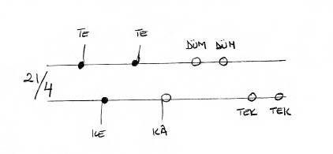

Geleneksel Osmanlı/Türk müziğini gerek teorik gerekse pratik açılardan sistemleştirme ve standartlaştırma girişimleri ondokuzuncu yüzyıl sonlarında Rauf Yekta Bey (1871-1935) tarafından başlatıldı ve onun ölümünden sonra 1940’lı ve 50’li yıllarda onun çağdaşı ve meslektaşı iki müzikolog, Hüseyin Sadettin Arel (1880-1955) ve Dr. Suphi Zühdü Ezgi (1869-1962) tarafından daha ileri götürüldü. Kullanılan sesler ve ses aralıkları, diziler, makamlar, müzik işaretleri standardize edildi ve porte’li notalama sistemine uyarlandı. Usuller, makamlar, müzik formları ve eserleri belli bir sisteme göre yeniden sınıflandırıldı. Geleneksel olarak meşk yöntemiyle sözlü olarak aktarılagelen repertuvarın önemlice bir bölümü derlendi, kâğıda döküldü ve yayımlandı; yeni müzik anlayışının ve sisteminin yaygınlaşmasına, müziğin intikaline ve öğretimine yönelik teori ve pedagoji kitapları yazıldı. Osmanlı/Türk müzik geleneğinin yazılı tarihsel kaynaklarına yönelik araştırmalar başlatıldı, bu geleneğe uygun olduğu kurgulanan ve idealize edilmiş yepyeni bir tarihsel arka plân yazılmaya çalışıldı vs.
Geleneksel Osmanlı/Türk musıkisine uygulanan bu modernleşme ve Batılılaşma programının zamanlaması ve gelişme evrelerine ilişkin ayrıntılar burada konumuz dışında kalıyor. Ancak hemen şunu da teslim etmek gerekir ki bugün Arel ve Ezgi’nin adlarıyla anılan Türk müziği modernleştirme programı, örneğin İran’da Ali Naki Vaziri’nin (1886-1981) ve talebelerinin geleneksel İran müziği için tasarladıkları programdan çok daha başarılı olmuştur1. Günümüzde Türk müziğinin örgün eğitiminin aşağı yukarı tümü artık Arel-Ezgi sistemi adı verilen sisteme dayanıyor. Müziğimizin bu iki müzikoloğun sistemine uymayan yanları ise öğrenim görmekte olan genç kuşaklarca bugün ya bir istisna ya da bir sapkınlık olarak algılanmakta.
Gerçekten de geleneksel Osmanlı/Türk müziğinin hiçbir cephesi Arel-Ezgi girişiminin düzleştirici ve homojenleştirici etkisinden kurtulamadı. Burada bu geniş ve kapsamlı modernleştirme girişiminin Türk tasavvuf müziğinin çok özel bir formu olan Durak üzerindeki etkisini –teknik düzeyde kalmaya gayret ederek– kısaca inceleyeceğiz.
Durak: Form ve Yapı
Bilebildiğimiz kadarıyla özgün bir Osmanlı/Türk tasavvuf musıkisi formu olan Durak, usulsüz olarak bestelenmiş dinî müzik formları ailesinin bir ferdidir. Diğer bir deyişle, bu aileye mensup eser formları sabit bir ritmik örüntüden yoksundurlar, yani usulsüz olarak bestelenmişlerdir. Ne var ki, belli bir usul kalıbıyla tartılmamış da olsalar, bu eserler bestelidirler ve ilke olarak taksim yapmaya, doğaçlamaya ve/veya icra sırasında doğaçlamaya dayalı varyantlar üretimine yer bırakmazlar. İngilizce müzikoloji terminolojisini kullanacak olursak, bu eserlerin hiçbiri “performance generated” (yani icrayla varlık bulan) değildir.
Besteli fakat usulsüz eserler ailesinin diğer fertleri arasında hepsi de dinî/tasavvufî nitelikte ses eserleri olan Na’t, Mevlit, Temcit-Münacaat ve Miraciye gibi beste formlarını sayabiliriz. Besteli mevlit unutulmuştur ve Süleyman Çelebi’nin Vesiletü’n-Necat’ının metni bir yüzyıldan fazla bir süredir Kur’an tecvidiyle gazel veya kaside arası bir doğaçlama üslûbuyla okunmaktadır. Mevlit bestesinin veya bestelerinin ondokuzuncu yüzyılın ikinci yarısında unutulup kaybolduğunu sanıyoruz.
Zaten sayıları çok az olan temcit ve na’t formlarında ise yeni beste yok gibidir. Na’tların en tanınmışı kuşkusuz Itrî’nin her Mevlevî âyini icrasından önce okunması âdet haline gelen Rast makamındaki Na’t-ı Mevlânâ’sıdır. “Cami na’tı” olarak nitelenen, yani güfte itibarıyla Hazret-i Peygamber’in methini sofiyâne değil zâhidâne bir üslûpla yapan başka na’tlar da vardır.
Miraciyeye gelince, bu çok büyük çaplı beste formunun bilinen tek örneği Nâyi Osman Dede’nin (1652-1730) Miraciye’sidir. Türün başka örneği bilinmiyor. Osman Dede’nin eserinin gördüğü büyük rağbet ve ulaştığı eşsiz prestij düzeyi, bu formun bir başka örneğinin ortaya çıkmasını engellemiş olmalıdır. Bu büyük çaplı ve karmaşık eserin mucizevî bir şekilde Osman Dede’nin Üsküdar’da Nasuhî dergâhında bulunurken gördüğü bir rüyanın etkisiyle ve sadece üç gün zarfında bestelenmiş olduğuna dair rivayet de bu varsayımımızı kuvvetlendirir. Dolayısıyla, elimizde bir tek örneği bulunan Miraciyenin özgün bir musıki formu olarak nitelenip nitelenemeyeceği dahi bizce kuşkuludur.
Sonuç itibarıyla, bu usulsüz eserler ailesinin yaşayan ve nispeten kalabalık bir repertuvara sahip tek ferdi Duraktır. Durakların güftelerini Osmanlı/Türk dinî ve tasavvufî musıki geleneği konusundaki vazgeçilmez kaynaklarımızdan biri olan Sadettin Nüzhet Ergun’un Türk Musikisi Antolojisi’nde buluyoruz2. Sadettin Nüzhet Ergun bu kitabında onyedinci yüzyılın ortaları ile ondokuzuncu yüzyıl sonu arasında bestelenmiş olan 109 adet Durak ve na’tın güftesini verir. Ne yazık ki, bunlardan sadece 40 kadarı notaya alınabilmiş ve bestesi bugüne gelebilmiştir. Bu 40 adet Durağın ise bugün ancak yarısı icra ediliyor. Yirminci yüzyılda da bir miktar Durak bestelendiği biliniyor. Örneğin, Hüseyin Sadettin Arel’in hepsi de 1940’lı yılların sonlarında bestelenmiş 108 adet Durağı olduğu söylenir. Bu konuya ileride döneceğiz.
Arapça ve Farsça metinler üzerine bestelenmiş Na’t ve Münacaatlar vardır. Duraklarda ise yalnızca Türkçe güfteler kullanılmıştır. Durak her zaman çalgı eşliği olmaksızın, yani a capella olarak ve, bilebildiğimiz kadarıyla, her zaman bir tek icracı tarafından okunur. Durakların güfteleri cami ilâhilerinin genellikle ifade ettiği türden klâsik bir zühd ü takvayı değil, öncelik ve özellikle tasavvufî aşkı veya vahdet-i vücud fikrini dile getiren metinler arasından seçilmiştir. Durak bestelemek için kullanılan güfteler arasında Yunus Emre’nin, Âşık Paşa’nın, Aziz Mahmud Hüdaî’nin, Nasuhî’nin, Niyazî-i Mısrî’nin, Sezaî’nin, Bursalı İsmail Hakkı’nın, Eşrefoğlu Rumî’nin şiir ve gazelleri önde geliyor. Fuzulî’nin, Ahmedî’nin, Şeyh Üftade’nin, Nazîm’in tasavvufî aşk temalarını işleyen beyit ve dörtlükleri de Duraklarda güfte olarak kullanılmıştır.
Durak güftesi olarak seçilen şiir ve gazellerin bazıları aruz, bazıları ise hece vezniyledir. Duraklara güfte olarak gazel ya da şarkı formunda şiirler seçilmiş. Seçilen şiirin bestelenen bölümü de çok farklı uzunluklarda olabiliyor. Bazen bir tek beyit, zaman zaman bir veya iki dörtlük, bazen da aynı şiirin apayrı iki veya üç mısraı Durağa güfte olarak seçilmiş. Örneğin Segâh makamındaki bir Durakta Yunus Emre’nin iki dörtlüğü, Dilkeşhâveran Durakta Aziz Mahmud Hüdaî’ye ait bir dörtlük, Isfahan Durakta Sezaî’nin hece vezniyle yazılmış iki dörtlüğü, birçok başka Durakta da Niyazî-i Mısrî’nin gazellerinden bir ya da iki beyit kullanılmıştır3. Bazı Durakların güftesinde nakarat olarak tekrarlanan bir mısra veya beyit vardır, fakat bazılarında bu özellik bulunmaz. Bazı Duraklarda Hû, Hayy, Kayyum vs. gibi sıfatlar terennüm lafzı olarak kullanılır. Ama birçoğunda bu terennüm bölümü yoktur.
Özetle, eldeki Durak güftelerinden Durak bestecisinin mutlaka kullanmak durumunda olduğu standart ve önceden belirlenmiş bir güfte formu veya şiir yapısı bulunmadığı anlaşılıyor. Durak güftelerini incelediğimizde Ekrem Karadeniz’in bu konuda vardığı katı ve kesin yargıyı maalesef doğrulayamıyoruz. Şöyle yazıyordu Ekrem Karadeniz:
“Duraklar çok defa dört satırlık manzum kıtalardan seçilirse de, yalnız birinci ve üçüncü mısraları bestelenir, ikinci ve dördüncü mısralar aynen birinci mısranın bestesiyle okunur. Üçüncü mısra meyan olup ona mahsus şekilde bestelenir.”4
Burada Karadeniz’in çok katı bir biçimde tarif ettiği şekil aslında “murabba beste” formunun kullandığı güfte düzenidir. Ancak, bu güfte düzenini Durakların tümüne teşmil etmek maalesef mümkün değil, çünkü böyle bir güfte/beste kalıbına tam olarak uyan Durakların sayısı üçü ya da dördü geçmiyor.
Durak güfteleri hakkında verdiğimiz bu yargı Durakların müzikal ve melodik iç yapıları için de aynen geçerlidir. Bazı Duraklar uzuncadır ve bolca melodik tekrarlar içerirler. Bazıları ise gerçekten çok kısadır ve muhtemelen birkaç kez tekrar edilerek icra ediliyorlardı. Bazı Duraklarda uzunca bir meyan bölümü vardır, fakat birçok Durakta da yer yer yapılan bir-iki küçücük makam geçkisi dışında eserin ana makamından hiç ayrılınmaz. Birkaç başka Durakta ise iç içe geçmiş birçok makam geçkisinin yapıldığı karmaşık bir meyanhane bölümü bulunuyor. Yine bazı başka Duraklarda da ya eserin giriş bölümü veya kısa birkaç nağmesi birkaç kez tekrarlanarak nakarat vazifesi yapıyor. Ayrıca, melodik yapılarına baktığımızda Durakların giriş (zemin), varsa meyan ve varsa nakarat bölümlerinin uzunluklarında ve birbirlerine oranlarında da herhangi bir sabitlik ya da standart bir ölçü veya ilişki göremiyoruz.
Özetle, eldeki müziksel malzeme bize Durakların hem güftelerinin hem de melodik yapılarının çok değişken olduklarını gösteriyor. Bu konularda kesin bir yargıya varmak için her ne kadar kullanılan güftelere, melodik yapılara, Durak formunun tarihsel gelişimine ve kullanımına ilişkin daha ayrıntılı analizler yapmak gerekse de, şu aşamada Durakların gerek güfte gerekse müzikal yapı açısından kesin ve sabitleşmiş bir formel yapıya sahip olduklarını ileri sürmek zor.
Duraklardaki güfte taksimatına, yani güftenin hecelerinin melodik yapıya, ezgisel çizgiye mutabakat şekline baktığımızda da Durakların beste üslûbu arasında bir benzerlik bulunmadığını görürüz. Aksine, ezginin güfteye tetabuk şekli, yani teknik deyimiyle “güfte taksimatı”, Duraktan Durağa –bu Duraklar aynı döneme ait olsalar dahi– büyük farklılıklar gösteriyor. Hece başına isabet eden melodik yoğunluk bazı Duraklarda gerçekten çok yüksektir, aynı hece üzerinde birçok melismalar yapılır, nağme içinde nağmeler açılır. Bazen ise Durağın melodik yoğunluğu bazı Bektaşî nefeslerini veya Sofyan veya Nîm Sofyan usulüyle bestelenmiş kısa ve çok basit zikir ilâhilerini hatırlatacak derecede düşüktür. Özetle, iç yapıları itibarıyla bu kadar farklılık gösteren Durakların aynı usul kalıbı ile bestelenmiş olduklarını iddia etmek bizce mümkün değil.
Durakların usulsüz olarak bestelenip bestelenmedikleri konusunda meseleye tersten bakarak da gerçeğe ulaşmaya çalışabiliriz. Bir an için Durakların hepsinin de sistematik olarak belirli ve iyi bilinen bir usulle bestelenmiş olduklarını varsayalım. O zaman da esas itibarıyla bir kuvvetli ve zayıf vuruşlar silsilesinden, yani toplam süresi belli olan bir ritmik kalıptan başka bir şey olmayan bu usul, bir yandan eserin ritmik atkısını oluştururken bir yandan da bu eserin çeşitli bölümlere ayrılmasının ve bu bölümlerin göreli uzunluklarının ölçü birimini oluştururdu. Yani usul, eserin uzunluğuna ve iç yapısında çeşitli bölümlerin oranlarına temel bir ölçüt teşkil ederdi. Nitekim, geleneksel Osmanlı/Türk musıkisinde usullerin, özellikle de on ya da on beş zaman biriminden daha uzun olan ve büyük usuller adı verilen karmaşık usul kalıplarının en önemli işlevlerinden biri de budur. Gerek dinî gerekse dindışı eserlerde eserin başından sonuna kadar birçok kez aynen tekrarlanan bu usul kalıbı, ritmik altyapısını oluşturduğu eseri birbiriyle orantılı melodik ve müzikal bölümlere ayırmaya yarar. Eserin her bölümünün içerdiği usul adedi de sözlü eserlerde zemin/meyan/nakarat/(varsa)terennüm, saz eserlerinde ise hane/teslim yapılanmasını gerek icracı gerekse dinleyici nezdinde daha belirgin hâle getirir.
Dolayısıyla, Durakların –ve özellikle de ondokuzuncu yüzyıldan öncesine ait olanlarının– iç yapılarının yukarıda sözünü ettiğimiz bu düzensizliklerini ve gerek güfte gerekse beste açısından formel muğlâklıklarını onların usulsüz bestelenmiş olduklarına dair tersten (a contrario) bir kanıt olarak görebiliriz. Gerçi Dede Efendi, Hacı Arif Bey, Behlül Efendi ve Zekâi Dede’ye ait bazı ondokuzuncu yüzyıla ait Duraklar her ne kadar usulsüz olsalar da nispeten daha dengeli bir iç yapıya sahiptirler ve bu Duraklarda tam olarak eşit değilseler bile birbirlerine çok yakın uzunlukta olan bildiğimiz zemin, meyan ve nakarat bölümlerini birbirinden ayırt etmek mümkündür. Bu ondokuzuncu yüzyıl Duraklarının bazılarının, düzenli olmamakla birlikte, belirgin bir nakaratlı yapıya sahip olduklarını söyleyebiliyoruz. Ancak, bunun sadece daha geç dönemlere ait bir gelişmeyi yansıtması, veya daha katı ve belirgin bir içyapıya sahip olan murabba beste gibi dindışı müzik formlarının etkisinin sonucu ortaya çıkmış olması, veya sadece o döneme ait bir üslûp meselesi olması da pek muhtemeldir.
Her ne ise, Durakların gerek güfteleri gerekse melodileri itibarıyla belirgin bir yapısal düzen ve sabitlikten mahrum bulunmaları gerçeğinin bu beste formunun sonradan oluşmuş bir özelliği değil, esas, aslî ve orijinal bir niteliği olduğunu kabul etmemiz gerekiyor. Durakların (ve tüm diğer usulsüz bestelenmiş dinî musıki formlarının) bu “anarşik” durumu, Arel ve Ezgi gibi geleneksel Osmanlı/Türk musıkisindeki kerameti kendilerinden menkul modernite ve düzen meraklılarını epey rahatsız etmiş olsa gerektir. Konuya tekrar döneceğiz.
Durak formunun tarihsel kökeni hakkında kesin bir şey bildiğimizi söyleyemeyiz. Ondokuzuncu yüzyıl öncesi dönemlerde Durakların dinsel ve tasavvufî kurumlar içindeki işlev ve konumları hakkında da bilgilerimiz kıt. Örneğin, Ali Ufkî’nin onyedinci yüzyıl ortalarında kaleme aldığı tahmin edilen iki adet nota derlemesinde “tesbih”, “tevhid” ve “ilâhi” başlığını taşıyan bir miktar dinî ve tasavvufî musıki eserinin notası vardır5. Fakat bunların arasında Durak yoktur.
Bilinen en erken dönem Durakların bestecileri arasında Sepetçizade Mehmet Ağa’yı (ölümü 1694), Hâfız Post’u (ölümü 1693) ve Ali Şirüganî Efendi’yi (ölümü 1714) sayabiliriz. Bu kişiler geleneksel Osmanlı/Türk dinî musıkisinin bir diğer usulsüz beste şekli olan Na’t formunun bilinen ilk bestecileri olan Mustafa Itrî’nin (ölümü 1712) ve Tiznâm Yusuf Çelebi’nin (ölümü 1728?) de aşağı yukarı çağdaşlarıydılar. Bunun bir tesadüf olup olmadığını ve bu eşzamanlılık durumunun usulsüz dinî ve tasavvufî beste formlarının başlangıç dönemine işaret edip etmediğini bilemiyoruz. Bu konuda kesin yargı yürütebilecek tarihsel ve müzikolojik kanıtlara da sahip değiliz. Durak formunun hangi tarikatlar (Halvetî, Celvetî, Kadirî, Cerrahî vs.) içerisinde başlayıp nasıl geliştiği, bizzat bu tarikatların zikir törenlerindeki değişimle birlikte nasıl evrildikleri, dindışı müziklerle ilişkileri gibi meseleler henüz tasavvuf tarihi araştırmalarınca ciddî olarak ele alınmış değil.
Walter Feldman ise, bir makalesinde, Durakların “Rum Ortodoks Kilisesi’nin bazı ilâhileriyle eski ve derin bir ilişkinin izlerini taşıdıklarını” ileri sürmüştür6. Bizce bu iddia şimdilik kanıtlanmayı bekleyen bir varsayımdır sadece. Ama, eğer tarihsel ve müzikolojik kanıtlarla güçlü bir biçimde desteklenecek olursa, bu iddianın özgün bir Türk tasavvuf musıkisinin oluşum süreci hakkındaki fikirlerimizi esaslı bir biçimde değiştireceği kesindir. Ayrıca, na’t ve Durakların genelgeçer icra üslûbuyla sesli doğaçlama (kaside, gazel) geleneği ve bu doğaçlamaların ritmik özellikleriyle ya da ezan okuma üslûbu veya Kur’an tecvidiyle ilişkileri de bugüne dek müzikolojik açıdan ciddî olarak incelenmiş değildir.
Durak: İbadet (liturgy), İcra Üslûbu ve İntikal
Durakların tasavvufî zikir törenleri içindeki yeri de önemli ve anlamlıdır. Bu konudaki somut bilgilerimiz daha çok ondokuzuncu yüzyıldaki uygulamalara ilişkindir. Halvetî, Kadirî ve Cerrahî tekkelerinde zikir törenlerinin belli noktalarında okunan Durakların, zikrin özellikle ciddiyet, vekar, tefekkür ve yoğun konsantrasyon gerektiren anlarına denk geldiği genellikle kabul edilir. Gerek Sadettin Nüzhet Ergun’un gerekse Ekrem Karadeniz’in belirttiklerine göre bu tarikatlarda Duraklar, kelime-i tevhid zikrinden hemen sonra ve ism-i Celâl zikrinden önce okunurdu. Aslında Durakların ondokuzuncu yüzyıl İstanbul’unda (Mevlevî dergâhları hariç) aşağı yukarı tüm sünnî tarikatların zikir törenlerinde okunduğunu biliyoruz.
Münhasıran belli bir tarikata ait ilâhi bulunmadığı biliniyor. Bunun gibi, önceleri Halvetî’lerden kaynaklanan bazı Duraklar onsekiz ve ondokuzuncu yüzyıllarda diğer tarikatların zikirlerinde de okunur hâle gelmişlerdir7. Durak okumakla ün kazanmış zâkirlerin de birçok tarikate mensup tekkede Durak okudukları biliniyor. Ekrem Karadeniz ondokuzuncu yüzyılda vakfı bulunan camilerde Cuma namazlarından önce de Durak okumanın âdet hâline geldiğini yazar8. Oysa eldeki Durak metinlerinden hiçbiri cami ilâhilerinin zühd ü takvâ atmosferine uyum sağlayacak nitelikte değil. Günümüzde ise Mevlit okunduğu zaman Mevlit bahirleri arasında Durak okunduğu da görülüyor.
Bu noktada Durakğın kelime anlamına da dikkat çekmemiz gerekiyor. Aslında bir ilâhi türü, olağan tasavvufî ilâhilerin9 bir türevi olarak da görebileceğimiz Durak, adını zikir içerisinde kendisine yüklenen somut bir işlevden de pekâlâ almış olabilir. Demek istediğimiz şu: eğer Durak sadece işlevsel bir ifade ise, bu takdirde durağın zikir âyinleri içindeki konumu, birçoklarının düşündüğü gibi çok yüksek ya da pek ulvî olmayabilir, yani Durak okunması bazen sanıldığı gibi zikrin doruk noktasını temsil etmiyor da olabilir. Zikir ibadetleri sırasında durağın çok daha mütevazı, daha alelâde bir işlevi ve konumu olması da bizce ihtimal dahilindedir.
Yani Durakların kullanımına son derece pratik ve gündelik icra açısından bakmak da mümkün. Katılanlar için gerek fiziksel gerekse zihinsel açıdan yoğun ve yorucu geçen uzun bir zikir töreni esnasında zaman zaman ara verilmesi arzu edilebilir. Zikrin çeşitli bölümleri arasında küçük bir ara verilirken de bir tek zâkir tarafından solo olarak bir ilâhi okunması ve sessizlik içinde dinlenilmesi hem katılımcılara bir fiziksel dinlenme ânı sağlar hem de onları zikrin bir sonraki aşamasına, başka bir konsantrasyon dönemine hazırlayan bir mola işlevi görür. Bu özel dinlendirme ve hazırlama işlevini yerine getiren ilâhi türüne de zaman içinde “Durak” ya da “Durak ilâhisi” adının verilmiş olması bize göre pek şaşırtıcı değil.
Durak bestecileri yalnızca bu özel tipte eserlerin icra edildiği tarikatların muhipleri, müntesipleri veya zâkirleri arasından çıkmadı. Başka tarikatların mensupları tarafından ve hatta tasavvuf ehli dahi olmayan kişiler tarafından bestelenmiş Duraklar da vardır. Örneğin, esas itibarıyla bir şarkı bestecisi olduğunu bildiğimiz Hacı Arif Bey’in (1831-1885), 400’e yakın şarkısı vardır. Bunun yanı sıra Hacı Arif Bey sekiz adet ilâhinin, çok bilinen ve sıkça icra edilen Uzzal makamında bir Durağın da bestecisidir.
Mevlevî dergâhlarında Durak ya da ilâhi okunmasının âdetten olmadığını biliyoruz10. Ne var ki, gerek İsmail Dede Efendi (1778-1846) gerekse talebesi Zekâi Dede (1825-1897) gibi ondokuzuncu yüzyılın önde gelen Mevlevî bestecileri yaşadıkları dönemin Durak repertuvarını iyi biliyorlar, bu repretuvarı öğrencilerin aktarıyorlardı ve bizzat kendileri Duraklar bestelemişlerdi. Bugünün Durak repertuvarında Dede Efendi’nin iki, Zekâi Dede’nin de bilinen dört adet durağı vardır.
Örneğin, ondokuzuncu yüzyılın çok tanınmış ve önemli bir Durak icracısı da Behlül Efendi’dir (ölümü 1895). İsmail Dede Efendi’nin de en son talebelerinden olan Behlül Efendi, müzik eğitiminin büyük bölümünü Yenikapı Mevlevîhanesi’nde almıştı. Ne var ki, Behlül Efendi, döneminin ileri gelen na’t ve Durak icracılarından biri olarak da şöhret yapmıştı. Bir yandan Üsküdar’daki Nasuhî ve Nalçacı dergâhlarında zikre iştirak edip Durak okurken bir yandan da düzenli olarak Yenikapı Mevlevîhanesi’nde Na’t-ı Mevlânâ’yı okur ve âyinhanlık yapardı. Kezâ, Dede Efendi’nin bir diğer talebesi olan Yeniköylü Hasan Efendi (1822-1905) de Yenikapı Mevlevîhanesi Şeyhi Osman Selâhaddin Dede’ye intisab etmişti. Ancak, Hasan Efendi Durak okumakla da şöhret kazanmıştı ve Sünbül Efendi dergâhında ve başka tekkelerde zâkirlik eder ve Duraklar okurdu. Sadettin Nüzhet’e göre Behlül Efendi
“...gayet mükemmel Durak okurdu ... bildiği na’t ve Durakların adedi de ziyade [çok] idi. Esasen bilhassa Durakçılıkla iştihar etmişti [şöhret yapmıştı].”11
Bu iki şöhretli Durak icracısının dışında Dede Efendi’nin iki mümtaz öğrencisinin daha ondokuzuncu yüzyılın ikinci yarısında zaman zaman tekkelere devam edip Durak okuduklarını görüyoruz. Bunlardan biri esasen ilmiye sınıfına mensup olan ve kadılık yapmış olan Mutafzade Ahmed Efendi (1810-1883)’dir. Ahmet Efendi zaman zaman Kocamustafapaşa’daki Sümbül Efendi dergâhında Durak okurdu. Dede Efendi’nin tekkelerde Durak okuyan diğer talebesi de aslen Mevlevî olan Suyolcuzade Salih Efendi (1807-1862)’dir.
Birçok Mevlevî besteci ve musıkişinas, böylece, başka tarikatların dergâhlarında okunan Durakların intikal zincirlerinde çok önemli roller üstlenmişlerdi. Mevlevî dergâhlarında âyinden önce okunması âdet haline gelen ve o da usulsüz bestelenmiş olan Itrî’nin Rast makamındaki na’tının (ve belki diğer na’tların da) icra üslûpları aslında Duraklarınkine çok benzer. Bu durum Mevlevî müzisyenleri ve na’thanları Durak öğrenmeye ve okumaya teşvik etmiş olabilir. İyi Durak okuyanların iyi birer na’than da olduklarından sık sık söz edilir.
Na’t ve Duraklar Türk dinî ve tasavvuf musıkisinin en musanna ve prestijli beste formları olarak görülürler. Bizzat kendisi de Üsküdar’daki bir Sadî dergâhının şeyhi olan edebiyat tarihçisi Sadettin Nüzhet Ergun, Durakların
“Türk musıkisinin en güzel ve o nisbette san’atlı eserlerinden”
olduklarını açıkça ifade eder12. Ekrem Karadeniz ise, 1950’li ve 60’lı yıllarda
“Duraklar Türk musıkisinin en yüksek san’at eserleridir”
diye yazar13. Ve hemen ardından şunu ilâve eder:
“Durak okuyabilmek için çok parlak ve pürüzsüz bir sese sahib olmak ve Durak tavrını çok iyi öğrenmiş olmak gerekir. Zamanımızda Durak okuyabilenler yok denilecek kadar azalmıştır. Dinî eserleri öğreten de kalmadığı için birkaç yıl sonra Durak dinlemek belki de imkânsız olacaktır.”14
Duraklardan söz eden tüm müzisyen, müzik tarihçisi ve müzikologların ittifak ettikleri önemli bir husus vardır: Durakları gerektiği gibi okuyabilmek için Tanrı vergisi güzel bir sese malik olmak ve iyi bir musıki eğitimi almış olmak yeterli değildir. Belki bu özellikler esasen gerekli bile değildir. Her şeyden önce na’t ve Durakların hakkını vermek için icranın gerektirdiği vazgeçilmez ve çok özel bir icra üslûbunu, yani “Durak tavrını” öğrenip özümsemiş olmak gereklidir. Sadettin Nüzhet Ergun, ondokuzuncu yüzyılın en önemli Durak icracı ve bestecilerinden olan Behlül Efendi hakkında
“...Durak okur, taksim ederdi. Sesi güzel değildi fakat gayet tavırlı okurdu”15
diye yazdığı zaman işte tam da bunu kasteder. Durakları gerektiği gibi okuyabilmek için güzel bir sesten ve temel müzik yeteneğinden çok daha başka şeyler de lâzımdı. Gerçekten de Durakların geleneksel Osmanlı/Türk musıkisi repertuvarının dinî olsun, tasavvufî olsun veya dindışı olsun başka hiçbir türden eserinin icra üslûbuna benzemeyen bu özel icra tavrı her zaman çok önemsenmiştir.
Ulaşabildiğimiz kaynaklardan ve mevcut az sayıdaki ses kaydından anlayabildiğimiz kadarıyla bu özel okuyuş üslûbunu kabaca şöyle tarif edebiliriz: Durak üslûbu özgürce fakat çok ağırbaşlı, akıcı ve sallı olmakla birlikte her zaman dakik, dengeli, dikkatli ve vakur bir okuyuşu gerektirir. Bu okuyuş üslûbu zaman zaman Türkçenin temel vurgu ve prozodi kurallarını yok sayacak kadar ağır ve yayvan dahi olabiliyor. Kaldı ki, Duraklardaki güfte taksimatının güftenin anlamına değil melodinin gidişine ve ağırlığına genellikle daha saygılı olduğu kolayca farkedilir. Eserin gideri ağırdır ve başından sonuna dek hiç değişmez.
Ayrıca, Durak okuyucusunun usul şartı bulunmamasından ve nispeten serbest icra tarzının neticesiyle yanıltıcı bir özgürlük duygusuna kapılarak besteden az da olsa uzaklaşıp Durak icrasına bir mevlit üslûbunu veya gazel ya da kaside havasını katiyen vermemesi gerekir. Duraklarda kesinlikle taksim, doğaçlama yapılmaz. Yerli yersiz ilâve süslemeler de olmaz. Durak tavrı denerek altı çizilen ve özelliği vurgulanan bu çok özel icra üslûbu, Durak repertuvarının kendisiyle birlikte zâkirden zâkire aktarılmıştır. Günümüzün Türk musıkisi çevrelerinde Hâfız Kâni Karaca’nın (1930-2004) Türk musıkisinin Na’t ve Durak gibi usulsüz eserlerinin en yetkin icracısı olduğu konusunda fikir birliği vardır.
Eldeki tarihî kayıtlar hiç değilse ondokuzuncu yüzyılın ikinci yarısında çok prestijli bir dizi icracıdan oluşan ve bir yandan tekkelerde Durak icra ederken bir yandan da hem Durak repertuvarını hem de gerekli icra üslûbunu bir sonraki kuşağa aktaran esaslı bir meşk ve intikal silsilesi (belki de bir “ekol”) bulunduğunu gösteriyor. Örneğin Zekâi Dede’nin talebelerinden Kâzım Uz (1872-1938); hocası Zekâi Dede, Behlül Efendi ve Duraklarla ilgili bir anısını şöyle nakleder:
“1308’de Sûzidil makamında bestelemeye çalıştığımız na’t-ı Mevlânâ’yı Zekâi Dede’ye arzettiğimde beni Fatih Camii’nde maksurede Kur’an okuyan Behlül Efendi’nin yanına götürüp Na’t ve Durağın tavrını bu zattan öğren diyerek elini öptürdü.”16
Yukarıda da belirttiğimiz gibi, Behlül Efendi, döneminin önde gelen Durak icracılarından biriydi. Ondokuzuncu yüzyılın en önemli dinî ve tasavvufî eser bestecilerinden olan Zekâi Dede ise talebesinden Kâzım Uz’u özellikle Durak ve na’t geçmek için Behlül Efendi’ye götürerek Durak okumanın –ve bestelemenin– ayrı bir uzmanlık gerektirdiğini açıkça teslim ediyor. Behlül Efendi’nin bildiği Durakları geçtiğini bildiğimiz iki öğrencisi Şeyh Mes’ud Efendi (ölümü 1908) ve İhsan İyisan’dır (1873-1950).
Ayrıca, Durak okumaktaki ustalığı bilinen ondokuzuncu yüzyılın ikinci yarısının bir diğer zâkiri olan Dede Efendi’nin öğrencisi Yeniköylü Hasan Efendi’nin (1822-1905) de bildiği Durakları kimlere aktardığını biliyoruz. Hasan Efendi’den başlayarak bugüne kadar gelmiş, yani aşağı yukarı bir buçuk yüzyıl kadar devam etmiş bir Durak meşki silsilesinin varlığından da söz edebiliriz. Yeniköylü Hasan Efendi’nin repertuvarındaki Durakları geçtiği talebeleri arasında Yeniköylü Hadi Bey’i (ölümü 1917), Kocamustafapaşa Camii hatibi Nida Efendi’yi (ölümü 1927), Kasımpaşa Küçük Piyale Camii imam ve hatibi Hâfız Cemal Efendi’yi (1870-1937) sayabiliriz17. Bu sonuncu kişi Sadettin Kaynak’ın (1895-1961) dinî musıki hocasıdır. Kaynak, dinî musıkiyi esas itibarıyla Kasımpaşalı Cemal Efendi’den öğrendiğini ve bu kişiden “müteaddit Duraklar ve ilâhiler ve birkaç fasıl”18 meşkettiğini bizzat ifade eder. Sadettin Kaynak’tan dinî eserler öğrenen müzisyenler arasında ise günümüzün önde gelen na’t ve Durak icracısı Kâni Karaca’yı görüyoruz. Ayrıca, Hâfız Cemal Efendi’den ilâhiler, Duraklar ve na’tlar meşketmiş bir diğer kişi de Hâfız Hulûsi Gökmenli’dir (1902-1976)19. 1950’li yıllarda Konya’da başlatılan Mevlânâ ihtifallerinde 1955’ten itibaren Na’t-ı Mevlânâ okuyan Hulûsi Gökmenli ile birlikte aynı mutrib heyetinde bulunmuş olan Kâni Karaca da Şeb-i Arus törenlerinde na’thanlık görevini 1960 yılında ondan devralır.
Böylece tâ Dede Efendi’den başlatabildiğimiz na’t ve Durak meşk ve intikal silsilesi, önce Yeniköylü Hasan Efendi’ye, sonra da Kasımpaşalı Hâfız Cemal Efendi’ye ulaşır. Cemal Efendi’den itibaren de iki kola ayrılan bu meşk silsilesi bir koluyla Sadettin Kaynak aracılığıyla, diğer koluyla da Hâfız Hulûsi Gökmenli aracılığıyla bugünün örnek na’t ve Durak icracısı Kâni Karaca’da birleşir. Ses kayıtlarının yokluğu dolayısıyla kesin olarak emin olamamakla ve kanıtlayamamakla birlikte, Hâfız Kâni Karaca’nın Durakların kendileriyle birlikte onların geleneksel icra üslûbunu da kendi meşk silsilesi içinde öğrenmiş olduğunu ve icralarını devralmış olduğu bu üslûba sadakatle dayandırdığını varsaymak yanlış olmaz.
Ondokuzuncu yüzyılın ikinci yarısının bir diğer önemli Durak icracısı da Hacı Nâfiz Bey’dir (1849-1898). Hacı Nâfiz Bey, Dede Efendi’nin talebesi olmadı. Ne var ki, ondokuzuncu yüzyıl Durak repertuvarının hiç değilse bir bölümünün bugüne notalarıyla birlikte gelmesini sağlayan intikal zincirindeki stratejik konumundan dolayı çok önemli bir icracı ve hoca olarak görülmesi gerekir. Bu konulardaki başlıca kaynağımız olan Sadettin Nüzhet Ergun’un ifadesine bakılırsa, Nâfiz Bey,
...binlerce dinî esere vâkıftı, yüzden fazla Durak bilirdi, esasen bilhassa Durak okumakla iştihar etmişti [şöhret kazanmıştı].”20
İstanbul’da Halvetî tarikatine mensup birçok tekkede zâkirbaşılık yapan Nâfiz Bey, özellikle Durak okumakta o denli şöhret kazanmıştı ki musıki çevrelerinde “Durakçı Nâfiz Bey” olarak anılıyordu. Ne yazık ki Nâfiz Bey’in Durakları bizzat kimlerden meşkettiğini bilemiyoruz. Sultan Abdülaziz zamanında daha çocuk yaşta iken güzel sesli olması dolayısıyla Enderun’a alınmış ve orada musıki eğitimi almış olduğuna bakılırsa, Dede Efendi’nin öğrencilerinden olan ve o dönemde Saray’da musıki hocası olarak görevli bulunan Haşim Bey’le Dellâlzade İsmail Efendi’nin Nâfiz Bey’e hoca olmuş olmaları pek muhtemeldir.
Nâfiz Bey’in öğrencileri arasında iki tanesi, Fehmi Efendi ve Abdülkadir Töre (1873-1946) özellikle önemlidir. Bir lâkabı da “Cerrah” olan Fehmi Efendi (ölümü 1935) İstanbul’da Halvetî ve Sünbülî tekkelerinde zâkirbaşılık yaptı. Nâfiz Bey’den 35 adet Durak öğrendi ve bu 35 Durak onun öğrencisi olan Dr. Suphi Ezgi tarafından daha sonra notaya alındı. Nâfiz Bey bildiği “100’den fazla” Duraktan ancak 35 adedini Fehmi Efendi’ye geçebilmişti. Abdülkadir Töre ise Nafiz Bey’den diğer talebesi Fehmi Efendi’ye oranla daha çok sayıda Durak meşk etmişti (Abdülkadir Töre bazı kaynaklara göre 70 adet, bazılarına göreyse 100 adet durağı ezberine almıştı)21. Nâfiz Bey’in Fehmi Efendi ve Abdülkadir Töre’den başka tekkelerde zâkirlik yapan öğrencileri de vardı elbette. Fakat bunların Durak okumaktaki becerileri ve Durakların intikal zincirlerindeki konumları bilinmiyor.
Durakları doğrudan doğruya Nafiz Bey’den meşkettiği için ve öğrendiği bazı Durakları daha sonra Nafiz Bey’in yukarıda sözünü ettiğimiz diğer öğrencisi Fehmi Efendi’ye bizzat öğrettiği için (yani Durakların meşkedildiği zincirin kaynağa biraz daha yakın bir halkasında yer aldığından dolayı) Abdülkadir Töre’nin yazdığı Durak notalarının Suphi Ezgi’ninkilere oranla daha “sağlam” oldukları zaman zaman iddia edilir22. Ancak, Abdülkadir Töre’nin notaya aldığı Duraklar henüz bir bütün olarak yayımlanmış değildir23.
Dr. Suphi Ezgi ise önce Nazarî ve Amelî Türk Musikisi adlı beş ciltlik kitabının 1933 ve 1935’te yayımlanan ilk iki cildinde sadece makam ve usul örnekleri vermek amacıyla birkaç Durağın notasını yayımlar. 1946 yılında ise kendi versiyonu olan ve kendi uygun gördüğü usul ile tekrar kaleme aldığı ve aralarında Fehmi Efendi’den geçtiği 35 tanesinin de bulunduğu 39 adet Durağı bir kitapçık olarak ayrıca yayımlamıştır24.
Kantemiroğlu ve Durak’larda Usul Meselesi
Onsekizinci yüzyılın hemen başlarında kaleme aldığı ve “Kantemiroğlu Edvârı” olarak da bilinen Kitabu ‘İlmi’l- Mûsikî ‘alâ Vechi’l-Hurûfât’ında Kantemiroğlu Türk musıkisinde usullerin işlevi ve gerekliliği hakkında şunları yazar:
“İlm-i musıkide cümlesinden lâzım olan ilm-i usûldür [usûl bilgisidir], zira kavl-i ehl-i musikar üzre [musıkiden anlayanların söylediklerine göre] usulsüz nağme mücerred [kendi başına] musıki nağmesi değildir. Nitekim nâmevzun [vezinsiz] beyt ilm-i şiirden olmadığı ve tasnif-i şâir-i nâ kâmil olduğu günden zâhirdir [acemi şairin eseri olduğu gün gibi açıktır]. Usûl musıkinin terazisi ve endazesidir [ölçüsüdür]”25.
Usulün vazgeçilmezliği üzerinde bu denli ısrar eden, usulsüz musıki eserini vezinsiz şiire benzetip onu musıki olarak dahi görmeyen, usulü musıkinin olmazsa olmaz koşulu olarak gören Kantemiroğlu’nun kitabının, yukarıda da vurguladığımız gibi, Osmanlı/Türk musıkisi geleneği içerisinde na’t ve Durak gibi usulsüz olarak bestelenmiş formların ortaya çıkış dönemiyle çağdaş olması herhalde kaderin bir cilvesi olsa gerek. Kantemiroğlu’nun usulsüz olduğunu kabul ettiği ve bu şekliyle saygıyla karşıladığı tek musıki formu taksimdir, yani sazende veya hanendenin zaman zaman yaptığı doğaçlamalardır. Kantemiroğlu öncelikle ve özellikle, dindışı müzikle ve enstrümantal müzikle uğraşmayı seçmişti. Eserinde dinî musıkiden hemen hiç söz etmez. Dolayısyla da dinî musıkideki özel beste formlarıyla ilgilenmemiş olması normaldir. Ama şu da bir gerçek ki, usulün müzikteki işlev ve konumuna böylesine katı bir yaklaşımın, Durak gibi önceden bestelenmiş, yani hiçbir doğaçlama öğesi içermeyen, fakat buna rağmen hiçbir usul altyapısı da olmayan bir müzik formuyla bağdaşması zor.
Kantemiroğlu’nun Türk musıkisi sistem ve anlayışında Durak gibi bir “anormalliğin” yeri yok. Aslında Kantemiroğlu da bir reformcu, onsekizinci yüzyıl başlarına ait bir tür “sistematist” olarak görülebilir. Edvâr’ında sürekli olarak eski edvârlardaki müzik anlayışıyla (“kavl-i kadim”) kendi önerisi olan (“kavl-i hakîr”) yeni musıki sistem ve anlayışını (“kavl-i cedid”) karşılaştıran Kantemiroğlu kendini bir müzik reformcusu olarak öne sürer; perdeleri, makamları, terkipleri, usulleri ve hatta icra biçimlerini kendi oluşturduğu sistematik içinde tanımlar, tasnif eder ve bunu “eskilere” oranla bir ilerleme olarak sunar26. Usulsüz olan Duraklara karşı takınılacak tavır konusunda ise her şeye rağmen Arel ve Ezgi’ye oranla önemli bir avantajı vardı Kantemiroğlu’nun: onlardan iki yüzyıl kadar önce yaşadığı için, o dönemde daha yeni yeni gelişmekte olan na’t ve Durak gibi usulsüz sesli müzik formlarını görmezlikten gelebilme lüksüne sahipti.
Usulün vazgeçilmezliği konusunda bu kadar katı prensipler öne sürmesine rağmen, Kantemiroğlu buna bazı istisnalar da tanır ve bazı usuller hakkında ilginç gözlem ve yorumlar yapar. Bazı usullerdeki bazı vuruşların sabit uzunlukta olmadıklarını ve ara sıra değişebileceklerini ve dolayısıyla bu usullerin (hanendeler tarafından) esnek bir biçimde kullanılabileceklerini iddia eder. Bu usuller Türkî Zarb, Evfer ve Devr-i Revan usulleridir. Şöyle yazıyor Kantemiroğlu:
“Agâh ol ki [bilmiş ol ki] Türkî Zarb usûlünün ikinci düm’ü... hanendelerin şartında usûle bend [bağlı] olmaz, öyle ki murad eylediği kadar [istediği kadar] uzatmağa ruhsatı [izni] vardır. Buna göre Evfer usûlünün ikinci düm’ü ve sonrası tek [sadece] hanendelere nâmevzun [ölçüsüz] olabilir, öyle ki istediği kadar uzun eder. Buna göre Devr-i Revân usûlünün düm’leri hanendelerde câbecâ [ara sıra] nâmevzun olabilir. Lâkin sazendeye böyle olmaz zira peşrevin şartı oldur ki nağme hatırı için vezn-i usûlü bozmaya.”27
Bu üç usul, demek ki, hiç olmazsa bazı bölümlerinde yoruma bağlı değişime açıktılar. Ne var ki, Kantemiroğlu bu üç usulün daha sonraki gelişimleri ve onların Durak Evferi usulüyle ilişkileri konusunda ipucu vermez.
Her hâlükârda, onyedinci yüzyılda da yirminci yüzyılda da, gerek Kantemiroğlu’nun gerekse Ezgi ve Arel’in karşılarında duran temel sorun aynıydı: Türk musıkisinin sistematik, mantıklı, bütünsel ve kapsayıcı bir teorisi usulsüz olarak bestelenmiş önemli bazı dinî/tasavvufî eserleri nasıl hazmedebilir? Diğer bir deyişle, tam olarak kapsayıcı olması istenen bu yeni teorik sistem, içerdiği ve tasnif edip tek tek tanımladığı usul kalıplarından hiçbirine uymamakta direnen koca bir dinî ve tasavvufî eser repertuvarının hesabını nasıl verebilir, onları sistemin içine nasıl tekrar alabilir? Arel ve Ezgi ise böyle yaman bir müşkül durumdan çıkış yolunu aradılar ve buldular. Kantemiroğlu basit birer istisna olarak nitelemişti birkaç usulle ilgili bu düzensizlikleri. Ezgi ve Arel ise duruma hâkim olmak için usulsüzlüğü ortadan kaldıran yeni bir kural icat etmeyi tercih ettiler.
Yaptıkları çok basitti aslında: gelenekten devraldıkları eserler ve gerçekler zihinlerindeki yeni müzik teorisine uymayınca çıkış yolunu kendilerine uyan yeni bir gelenek icat etmekte buldular. Kaldı ki, “geleneğin icadı” yeni bir şey veya müzik alanına mahsus bir tavır da değil. Daha kesin bir biçimde söylemek gerekirse, Durak konusunda Arel ve Ezgi, Osmanlı/Türk musıki geleneğinin kendi uygun gördükleri sistematizasyon türüne uymayan teknik bir ayrıntısını alıp amaçlarına uygun hâle getirmekte hiç tereddüt göstermediler. Çünkü Arel ve Ezgi’nin üstlendikleri geleneksel Osmanlı/Türk musıkisini “rasyonel” ve “modern” hale getirme misyon ve programı istisna kabul etmiyordu. Dolayısıyla na’t ve Duraklarda görülen önemli bir anormallik de ortadan kaldırılmalıydı.
Sonuç itibarıyla Arel ve Ezgi tarafından zımnen şöyle bir düşünce silsilesi izlenmiş olsa gerektir:
1- Durakların usulsüz bestelenmiş olması imkânsızdır, çünkü bu durum Türk musıkisi sisteminin temel mantığına ve tutarlılığına uymaz. Temel kural şudur: bestelenen her eserin bir makamı ve bir usulü vardır;
2- Demek ki Durakların bir usulü var ve bilinen tüm Duraklar mutlaka aynı usul kalıbıyla bestelenmiş olmalıdır;
3- Ama eğer bugün Duraklar böyle bir usule uyarak okunmuyorsa, demek ki aslen var olan bu usul ya bir şekilde “kaybolmuş”, ya da cahil icracılar ve zâkirler tarafından zamanla “unutulmuştur”;
4- Dolayısıyla da sistemi yeni baştan yerli yerine oturtmak için bu unutulmuş aslî, esas ve otantik usulü bulmak, onu “yeniden keşfetmek” gerekiyor.
İşte böyle “yeniden keşfedilmiş” olan usule de Dr. Suphi Ezgi, Durak Evferi adını vermiştir. Eğer yeni sistem müziğe uymuyorsa, elbette ki var olan müziği çağdaş sisteme uydurmak gerekiyordu.
Durakların Ehlileştirilmesi, Usule Bağlanması, Yeni Bir
“Teknik Geleneğin” Arel ve Ezgi Tarafından İcadı
Dr. Suphi Ezgi tarafından ilk kez 1935 yılında açık olarak ortaya konan 8 vuruşlu ve 21 zaman birimini kapsayan Durak Evferi usulü aşağıdaki gibidir28:

28 Dr. Suphi [Ezgi], Nazarî ve Amelî Türk Musikisi, İstanbul,
İstanbul Konservatuvarı Neşriyatı, Cilt II, 1935, s.56.
Ezgi tarafından tanımlanan biçimiyle, bu Durak Evferi usulünün alışılmadık bir yapısı var. Her şeyden önce bu usul zayıf bir vuruşla, yani “tek” ile başlıyor. Normal olarak usuller kuvvetli bir darpla, yani bir “düm” vuruşuyla başlar. Geleneksel Osmanlı/Türk musıkisinde kullanılmış olduğunu bildiğimiz 100’e yakın usul arasında sadece iki tanesi bu şekilde zayıf bir vuruşla başlar.
Ayrıca, Ezgi bu usulü bir “mürekkep (bileşik) usul” olarak tanımlıyor. Yani, Ezgi’ye göre Durak Evferi usulü bir usul terkibidir, art arda sıralanmış birkaç adet kısa ve “basit” usulün bir araya gelmesinden oluşur. Burada Arel ve Ezgi’nin makamları tasnif yöntemiyle bir paralellik söz konusudur, çünkü onların sisteminde Türk musıkisinin tüm makamsal birimleri de “basit makam”, “mürekkep (bileşik) makam” ve “şed makam” olarak üç kategoriye ayrılıyor. Dr. Suphi Ezgi, toplam olarak 21 zaman birimi içeren Durak Evferi usulünün iç yapısını 5 + 4 + 4 + 4 + 4 şeklinde ifade ediyor ve beş adet “basit usulün” yan yana gelmesinden oluştuğunu ileri sürüyor. Bunların ilki beş zamanlık bir Türk Aksağı usulü, diğer dördü de dörder zamanlık birer Sofyan usulüdür.
Aslında, Türk musıkisi usullerinin her biri, geleneksel olarak nev’i şahsına münhasır çeşitli uzunluktaki birer kuvvetli ve zayıf vuruşlar silsilesi ve kalıbı olarak tanımlanır. Bu usulleri ard arda sıralanmış bir kısa ve basit usuller dizisi ve zinciri olarak tanımlamak da Arel ve Ezgi’nin getirdikleri bir usul tanım ve sınıflandırma yöntemidir. Arel ve Ezgi Türk musıkisinin geleneksel usullerini sistematik olarak iki, üç, dört ve beş zamanlık küçük bileşenlere ayırmışlar ve 15 zaman biriminden daha uzun tüm “büyük usulleri” bu küçük ritmik birimlerin belli bir şekilde sıralanması diye yeniden tanımlamışlardı. Anlaşılan Durak Evferi usulünü de bu prensibe göre oluşturmuşlardı.
Diğer yandan, bu 21 zamanlık Durak Evferi usulünün son derece düşük bir vuruş yoğunluğuna sahip olduğunu görüyoruz. Demek istediğimiz şu: bu usulde toplam yirmi bir zamanlık bir süreye sadece sekiz adet zayıf veya kuvvetli vuruş düşüyor (te/ke/te/kâ/düm/düm/tek/tek). Dolayısıyla bu usulün içinde bulunan her vuruşun ortalama süresi çok yüksektir (21/8). Oysa Türk musıkisinin usul kalıpları repertuvarındaki başka önemli usuller bu tür bir iç yapı sergilemezler. Örneğin, benzer uzunluktaki 20 zamanlık Fahte usulü tam on dört vuruş içeriyor. Onun vuruş yoğunluğu daha yüksektir (20/14). Biraz daha uzunca olan 24 zamanlık Çenber usulünde ise 17 adet kuvvetli ve zayıf vuruş vardır. Yine 24 zaman içeren diğer bir usul olan Nîm Sakîl usulünde ise (ki Itrî’nin Nevâ Kâr’ı bu usuldedir) tam tamına 21 adet vuruş bulunuyor. Yani, Ezgi’nin Durak Evferi usulüne yakın uzunlukta usullerde Durak Evferinden çok daha fazla zayıf ve kuvvetli vuruş adedi bulunuyor.
Gerçekten de geleneksel Osmanlı/Türk müziğinin usulleri arasında bu kadar düşük bir vuruş yoğunluğuna sahip olanı yoktur diyebiliriz. Durak Evferi usulünün içerdiği toplam zaman birimine oranla nispeten az sayıda vuruş içermesinin bu bağlamda belli bir önemi var. Çünkü genel olarak bir usul kalıbının (burada da öncelik ve özellikle daha uzun ve karmaşık olan “büyük usul”lerden söz ediyoruz) vuruş yoğunluğu ne denli düşük olursa, o usul kalıbının çok çeşitli ve farklı melodik yapılara uyum sağlaması da o kadar kolay olur. Usul kalıbının içinde az sayıda vuruş olduğu zaman bu usulün çok farklı nota yoğunluklarına sahip melodik yapılarla dikey olarak çakıştırılması kolaylaşır. Seyrek darplı bir usulün melodiye intibakı daha kolaydır. Özetle, Suphi Ezgi’nin tanımladığı şekliyle Durak Evferi usulünün esnekliği ve yapısal uyum kabiliyeti, onun mevcut Duraklar repertuvarına adaptasyonunu çok kolaylaştırıyor.
Diğer yandan Suphi Ezgi, yayınladığı Durak notalarında niçin ritmin ve usulün doğal akışını bozan ve bazı notaların serbestçe uzatılmasına olanak veren bu kadar çok sayıda “point-d’orgue” bulunduğunu da açıklamıyor. Ayrıca, Durak Evferi usulü istisnasız her durağın başında bulunan ve uzunluğu yoruma göre değişebilen “Ah” ya da “Dost” hecesinin varlığını da hesaba katmaz.
Cinuçen Tanrıkorur’un (1938-2000) 1984’te bestelediği Bestenigâr makamında Durak.
Arel ve Ezgi’nin Durakları kesin bir usul kalıbı içine sokma çabalarının altında hep bir “otantiklik” kaygısı, eserin besteci tarafından tasarlanmış şekline yeniden ulaşma isteği bulunduğuna yukarıda işaret etmiştik. Durakların “kaybolmuş” usulünü yeniden bulma girişimi aslında bir tür “restorasyon” girişimidir. Suphi Ezgi bu işe “aslına irca” (yani aslına döndürme) adını da veriyor. Zamanın getirdiği aşınma payını, yıpranma ve değişmeyi ortadan kaldırıp, yani bir bakıma zamanı tersine işletip, eserin aslına, bestecisi tarafından ilk yapıldığı zamanki tazeliğine ulaşmayı amaçlıyordu Ezgi. Kendisi bu işlemi Duraklar dışında birçok başka eski eser için de yapmıştır. Ancak, Durak formu söz konusu olduğunda bu aşınma ve değişim, Ezgi’ye göre, Durakların aslî ve orijinal usulünün tamamen unutulması ve literatürden kaybolması biçiminde tezâhür etmişti. Dolayısıyla bu usulü bulmak ve eserleri bu orijinal usule uyumlu hale getirmek gerekiyordu.
Tarihî Kaynaklarda Durak Evferi Usulü Var mı?
Ne var ki, Durakların orijinal ve sonradan kaybolmuş ya da unutulmuş usulünü bulmaksa mesele, onyedinci yüzyılda ve sonrasında kullanılmış olan 100’e yakın usul arasında hiçbir iz bırakmadan “kaybolmuş” olan tek usul kalıbının neden Durak Evferi olduğu sorusunun da sorulması gerekiyor. Ancak, Ezgi bu konuda herhangi bir ipucu veya kanıt vermez.
Dolayısıyla, burada bizim cevap aramamız gereken ilk soru, Ezgi’nin Durakların “gerçek” ve “otantik” usulünü arayıp bulma sürecinde sağlam tarihsel ve müzikal kanıtlara dayanıp dayanmadığı sorusudur. Bu noktada her şeyden evvel Durak Evferi usulünün, varsa, tarihsel kökenlerini araştırmak gerekiyor.
Dr. Suphi Ezgi beş ciltlik Nazarî ve Amelî Türk Musikisi adlı kitabını yayımlamaya başlamadan29 aşağı yukarı on yıl kadar evvel, 1922 yılında, Rauf Yekta Bey’in neredeyse kitap boyutuna varan Türk Musıkisi makalesi Fransa’da yayımlanır30. Dönemin en büyük müzik otoritesince kaleme alınmış, geleneksel Osmanlı/Türk müziğinin teori ve pratiği hakkındaki bu ilk sistematik bilimsel eserde Türk müziğinde kullanılan büyüklü küçüklü tam 45 adet usul kalıbı tanımlanıyor ve bu usullerin her biri bir müzik eseri notasıyla örneklendiriliyor. Rauf Yekta Bey’in tanımladığı bu usuller arasında Suphi Ezgi’nin Durak Evferi usulü bulunmuyor. Ayrıca, dönemin önemli bir müzik hocası ve bestecisi ve Dr. Suphi Ezgi’nin İstanbul Konservatuvarı Türk Musıkisi Tasnif ve Tesbit Heyetinden mesai arkadaşı olan ve “hoca” lâkabıyla bilinen İsmail Hakkı Bey (1866-1927) de İstanbul’da 1925 yılında pedagojik nitelikte bir Türk müziği solfeji kitabı yayımlar. Tam 37 usulün tarif edildiği İsmail Hakkı Bey’in kitabında Ezgi’nin Durak Evferi usulünün adı geçmez31.
Bu Durak Evferi usulünü veya ona şekil itibarıyla az çok benzeyen bir usulü onyedi, onsekiz ve ondokuzuncu yüzyılların Türkçe yazma veya basılı müzik kaynaklarında da maalesef bulamıyoruz. Bu kaynakları kısaca gözden geçirelim. Muhtemelen onyedinci yüzyılın ortalarında kaleme alınmış ve henüz yayınlanmamış bir elyazması eserinde Leh mühtedîsi Wojciech Bobowski (nâm-ı diğer Ali Ufkî Bey) 30 kadar usul kalıbının darplarının sıralanışını veriyor32. Ondan bir yarım yüzyıl kadar sonra yazan Kantemiroğlu da Edvârında toplam olarak 20 usul kalıbının vuruşlarının sıralanışını verir33. Ezgi’nin tanımladığı Durak Evferi usulü geleneksel Osmanlı/Türk musıkisi tarihinin bu iki temel kaynağının hiçbirinde yer almıyor.
Kantemiroğlu’nu hemen izleyen dönemde, yani onsekizinci yüzyılın ilk yarısında kaleme alınmış ve günümüze gelmiş birçok müzik teorisi kitabında usullerle ilgili bilgiler veriliyor. Örneğin, Hızır Ağa’nın 1740’lı yıllarda kaleme aldığı tahmin edilen Tefhîmü’l-Makamât fi Tevlîdü’n Nagamât adlı edvâr kitabında 25 usulün darpları veriliyor34. Hızır Ağa’nın çağdaşı olan Tanburî Arutin, Ermeni hurufatıyla fakat Türkçe olarak 1730’lu yıllarda kaleme aldığı bir eserde 30 adet usulün darplarını veriyor35. Dönemin iki Rum musıkişinası ve kilise hanendesi de yazdıkları musıki risalelerinde uzun uzun usullerden söz ederler. Panayiotis Halaçoğlu 1720’li yıllara ait metninde 28 adet, onun talebesi olan Kyrillos Marmarinos ise 1750’li yıllarda yazdığı risalede 22 adet usulün vuruşlarını sıralar36.
Kezâ, çok uzun yıllar Osmanlı sınırları içinde yaşamış olan Fransız Büyükelçiliği tercümanı Charles Fonton, 1751’de yazdığı Şark Musıkisi Hakkında Deneme adlı risalede toplam olarak 30 adet usulün darplarını sıralıyor37. Onsekizinci yüzyılın sonlarına doğru gelindiğinde ise en önemli kaynak olarak Abdülbaki Nâsır Dede’nin 1794’te kaleme aldığı Tedkik ve Tahkik’i görüyoruz. Abdülbaki Nâsır Dede bu risalede yirmi bir adet usulün tanımını veriyor38.
Ezgi’nin Durak Evferi usulü onsekizinci yüzyıla ait bu kaynakların hiçbirinde yoktur. Bu yazılı veya basılı kaynaklarda 9/4 veya 9/8’lik olarak yazılan ve Mevlevî âyinlerinde kullanılan ve bugün de bildiğimiz Evfer usulünden başka türden bir Evfere rastlanmıyor. Durak Evferi usulüne rastlanmadığı gibi, 21 zamanlık herhangi bir başka bir usul de bulunmuyor bu kaynaklarda.
Ondokuzuncu yüzyıla ait çeşitli Türk musıkisi kaynaklarında da Durak Evferi usulüne rastlayamıyoruz ne yazık ki. Arap harfleriyle ilk matbu güfte mecmuası Hâşim Bey Mecmuası’dır. Bu mecmuanın ilk baskısı 1855’te, güfte kolleksiyonunun başına uzunca bir edvâr, usulât ve makamât kısmının ilâve edildiği ikinci baskısı ise 1864 yılında yapılmıştır. Bu kısımda Dede Efendi’nin talebesi olan Hâşim Bey, daireler içine yerleştirilmiş olarak 35 adet usulün darplarını veriyor. Haşim Bey bu usullerin altı tanesinin –ki bunlar “Darbeyn” usullerdir– bizzat kendi icadı olduğunu belirtir (“usul-i cedid”). Diğer 29 usulün arasında ise Durak Evferi bulunmuyor39.
Haşim Bey Mecmuasının yayınından birkaç yıl önce Fener Rum Patrikhanesi tarafından kilise hanendelerinin dindışı müzik konusunda bilgi edinmelerini sağlamak amacıyla (yani tıpkı ondan bir yüzyıl kadar önce Halaçoğlu ve Marmarinos’un yaptıkları gibi) Grek harfleriyle ve Grekçe didaktik nitelikte bir kitapçık yayınlanır. 1843 yılında basılan Ermineia tis Exoterikis Mousikis adlı bu kitapçıkta perdeler, usul ve makamlar şekil ve örneklerle uzun uzun izah edilmektedir. Kitapta 21 adet usulün darpları veriliyor40. Bunlar arasında da Durak Evferinin adı geçmiyor.
Haşim Bey Mecmuasından on yıl kadar sonra dönemin önemli hoca ve musıkişinaslarından Bolahenk Nuri Bey (1834-1910) 1873 yılında bir güfte mecmuası yayınlar. Bu mecmuanın giriş bölümünde 32 usul tarif edilmektedir ve bunlar arasında da Ezgi’nin Durak Evferi usulü bulunmuyor41. Ondokuzuncu yüzyılın bir diğer iyi bilinen güfte mecmuası da Şeyh Edhem Efendi (1862-1933) tarafından 1890 yılında yayınlanan mecmuadır. Bergüzâr-ı Edhem adlı bu mecmuanın giriş bölümünde Edhem Efendi’nin verdiği 15 usul arasında da Durak Evferini aramak boşunadır42.
Ondokuzuncu yüzyılın en tanınmış ve en kapsamlı musıki mecmuası ise hiç kuşkusuz 1899 yılında Ahmet Avni Bey [Konuk] (1871-1938) tarafından yayınlanan Hanende adlı mecmuadır43. Altı yüz sayfalık bu çok kapsamlı ve çok sistematik güfte mecmuası, ondokuzuncu yüzyılın ikinci yarısının fasıl repertuvarının sadık bir aynası, dönemin âdeta bir tür dindışı eser kataloğu olarak görülür. Ayrıca Ahmet Avni Bey, Suphi Ezgi’nin de yakın dostu, meslektaşı ve meşk arkadaşıydı; birlikte yıllarca Zekâi Dede’den dinî ve dindışı klâsik eserler meşk etmişlerdi. Hanende mecmuasının giriş bölümünde, âdet olduğu üzere, Ahmet Avni Bey bazı usulleri tarif eder ve 37 adet usulün darplarını sıralar. Bu usuller arasında da Durak Evferi yoktur. Ayrıca, Ahmet Avni Bey Durak formunu tanımlarken şöyle yazar:
“Durak – Bunlar dahi tekâyâda [tekkelerde] münferiden kıraat olunmak [tek başına okunmak] üzere ilâhide müsta’mel eş’ar nev’indendir [ilâhide kullanılan şiirler cinsindendir]. Türkî darp veyahut Durak Evferi ile bestelendiği mervi ise de [rivayet ediliyorsa da] elyevm [bugün] mevcut olanların hiç birisi Türkî darp usûlünün reftârına muvafık [yürüyüşüne uygun] olmadığı gibi esâtizeden [üstadlardan] hiç birisinin bu usûl ile kıraat eylediğine [okuduğuna] fi zemânina [zamanımızda] tesadüf edilmemiştir [rastlanmamıştır].”44
Ondokuzuncu yüzyıl sonları ile yirminci yüzyıl başlarının diğer bazı önemli matbu güfte mecmualarında da Durak Evferi usulünü aramak beyhudedir45. Suphi Ezgi’nin bir diğer çağdaşı besteci ve müzik hocası ve o da Zekâi Dede’nin talebesi olan Kâzım Uz (1872-1938) 1893’te Türkçede türünün ilk örneği olan küçük bir Musıki Terimleri Sözlüğü (Musıki Istılâhatı) yayınlar. 530 madde içeren bu sözlüğe toplam 39 usul madde başı olarak alınmıştır. Bunlar arasında Durak Evferi bulunmuyor46. Ondokuzuncu yüzyıla ait incelediğimiz tüm bu kaynaklar içinde Durak Evferi usulüne rastlanmadığı gibi, ona az çok benzeyen başka bir usul, veya onun gibi 21 zamanlı bir diğer usul de yoktur.
Sonuç itibarıyla, 1930’lu yılların başında beş ciltlik kitabını yazmaya başlayan Dr. Suphi Ezgi’nin, Durakları yeni oluşturmakta olduğu makam ve usul tasnif sistemine dahil etmek istediği ve bunun için de uygun gördüğü şekilde yepyeni bir usul kalıbı icat ettiği apaçık ortadadır.
Gerçi onyedi, onsekiz ya da ondokuzuncu yüzyıllarda bestelenmiş bazı Durakların bir usul kalıbıyla bestelenmiş olmaları ihtimalini hepten reddetmek mümkün değil. Ama, eğer varsa, böyle bir orijinal usul kesinlikle Ezgi’nin tanımladığı Durak Evferi usulü olmuş olamaz. Ezgi’nin Durak Evferi’nin önceki yüzyıllara ait ve mecmualarda gördüğümüz sayıları 50’yi geçen usulün hiçbiriyle uzak ya da yakın bir akrabalığı, anlamlı bir benzerliği de yoktur. Dolayısıyla da Durak Evferi usulünün eski bir usulün zaman içinde değişmiş bir biçimi, eski usul kalıplarından birinin bir türü veya varyantı, o kalıplardan birinin kudüm velveleleri yoluyla zaman içinde oluşmuş bir türevi olması ihtimali de bizce çok düşüktür47. Burada söz konusu olan Dr. Suphi Ezgi’nin kendine mahsus bir icadıdır sadece.
Ayrıca, geleneksel Osmanlı/Türk musıkisinde sadece bir tek icra alanına veya bir tek beste formuna inhisar eden usul kalıbı da yoktur. Var olan usul kalıpları hem dinî hem dindışı musıkide, hem şarkılarda hem ilâhilerde, hem peşrevlerde hem Mevlevî âyinlerinde vs. kullanılır. Hele hele bir tek beste formuna mahsus ve başka türden eserlerde kesinlikle kullanılmamış bir usul kalıbı bulmak hiç mümkün değil. Yani Durak Evferi usulünü icat eden Dr. Suphi Ezgi, Durakların, eğer usullü iseler tabii, sadece ve sadece bu usulle bestelendiklerini ileri sürerek Osmanlı/Türk musıkisinde usul kalıplarının kullanımına ilişkin geleneksel esnek yaklaşımı da tamamen bir yana itmiş oluyordu.
Özetleyecek olursak, Dr. Suphi Ezgi, Durakların şaşırtıcı nitelikte düzensiz yapısını zaptürapt altına almak için maksada uygun bir usul icat etmiş ve ona Durak Evferi adını vermiştir. Bu yeni usule bu adı vererek Mevlevî âyinlerinin ikinci ve dördüncü selâmlarında kullanılması âdet haline gelen ve bu yüzden bazı kaynaklarda “Mevlevî Evferi” diye de adlandırılan 9/4’lük Evfer usulüyle bir paralellik kurmak istemiş olduğunu tahmin ediyoruz.
Ezgi, durak Evferi usulüyle yazdığı Durak notalarını 1933 yılından itibaren yayımlamaya başlar. Bu Duraklardan birkaçının notasını Abdülkadir Töre (daha doğrusu onun öğrencisi Ekrem Karadeniz) usulsüz olarak yayımlamıştır. Ezgi 1946 yılında 39 adet Durak, altı na’t, dört salât, bir temcit ve birkaç dinî eserin daha notasını içeren bir kitapçık yayımlar48. Bu eserde Ezgi, notaya aldığı na’tlardan beş tanesini Durak Evferi usulüyle, Itrî’nin Na’t-ı Mevlânâ’sını ise Türkî Zarp usulüne uydurarak yazmıştır. Salât, Tekbir ve Mersiyeleri de aynı Türkî Zarp usulüyle notaya dökmüştür. Ancak, Ezgi’nin kullandığı Türkî Zarp usulünün ondan iki asır önce onsekizinci yüzyıl kaynaklarında bulduğumuz ve aynı adı taşıyan usulle de hiçbir benzerliği yok.
Bugüne dek Duraklar hakkında yayımlanmış tek eser budur. Maalesef Duraklar hakkında bugüne dek başka bir nota derlemesi veya herhangi bir özgün müzikolojik araştırma yayımlanmış değil. 1946’da Suphi Ezgi’nin yayımladığı bu Duraklar derlemesi ve “yeniden keşfettiği” Durak Evferi usulü geleneksel Osmanlı/Türk musıkisinin diğer modernleştiricisi Hüseyin Sadettin Arel’i pek heyecanlandırmış olmalı ki, o güne dek bir tek Durak dahi bestelememiş olan Arel, hemen hummalı bir şekilde çalışmaya koyuldu ve iki yıl içerisinde, yani 1947 ile 1949 yılları arasında tam tamına 80 adet Durak besteledi. Bunların hepsi de elbette ki Durak Evferi usulüyle bestelendi49.
İcat edildikten sonra Durak Evferi usulü musıki çevrelerinde ciddî bir direniş veya muhalefetle karşılaşmadı. Sadettin Arel - Suphi Ezgi Türk musıkisi ses ve nota yazım sisteminin yerleşmesinden sonra da bu usul Türk musıkisi usulleri repertuvarının bir parçası haline geldi ve gerek varlığı gerekse “otantik” niteliği yirminci yüzyılda Ekrem Karadeniz hariç kimse tarafından ciddî olarak tartışma konusu edilmedi50.
Ekrem Karadeniz “Durakçı” Nâfiz Bey’in öğrencisi olan Abdülkadir Töre’nin öğrencisiydi. Hocasının ardında bıraktığı notlara dayanarak yıllar önce yazdığı bir Türk müziği kuramı kitabı ise ancak ölümünden sonra 1983 yılında yayımlanabildi. Ayrıca, bu kitapla öne sürülen özgün Türk musıkisi ses ve makam sistemi, Arel-Ezgi sistemine alternatif teşkil edecek kadar yaygınlık kazanamadı.
Duraklar ve Durak Evferi usulü meselesinde ise Ekrem Karadeniz orta yolcu bir tutum izler. Karadeniz, Ezgi’nin Durak Evferi usulüne prensip itibarıyla karşı değildir ve yeni icatedilmiş olan bu usulle yeni Duraklar bestelenmesine hiçbir itirazı yoktur. Ama önceki yüzyıllardan intikal etmiş Durakların kesinlikle usulsüz olarak bestelenmiş oldukları konusunda ısrarlıdır ve bu Durakları zorla Ezgi’nin yeni usulüne uydurmaya kimsenin hakkı olmadığını savunur. Ne var ki, Karadeniz’in tepkisi daha çok duygusal niteliktedir ve o da, tıpkı Suphi Ezgi gibi, Durakların usulleri hakkında veya usulsüz olmaları konusunda gerçekten sağlam ve ikna edici tarihsel ve müzikolojik kanıtlar ileri sürmez. Şöyle yazıyor Ekrem Karadeniz:
“...eski eserlerde Durakların usûlle bestelendiğine dair hiçbir bilgiye rastlanmamıştır. Aksine, Durakların usûlsüz bestelendiğine dair görüş birliği vardır. Bu türden eserlerin usûlle bestelenmesi denenmeğe değer bir fikir olabilirse de, eski üstadların usûlsüz besteledikleri çok güzel ve san’atlı Duraklara el uzatmak ve onları üzerlerinde değişiklikler yaparak aslından başka şekillere sokmak kimsenin hakkı olmayan yanlış bir harekettir.”51
“Bazı musıkiciler Dr. S. Ezgi’nin “Amelî ve Nazarî Türk Musikisi” kitabında ileri sürdüğü görüşe aldanıp Durakların önceleri usûlle bestelendiğini, ancak zamanla kulaktan kulağa aktarılırken usûlün kaybolduğunu zan ve iddia etmektedirler. Hatta daha da ileri gidip 21 darplı Durak Evferi usûlünü bulduklarını ileri sürerek mevcut Durakları bu usûle uydurmaya çalışmaktadırlar. Gerçekten de Türk musıkisinde böyle bir usûl vardır ve bu usûlle Durak tavrında eser bestelemek mümkündür (Bu iddiayı ileri sürenler kendileri tarafından bestelenmiş bir-iki örnek de vermişlerdir). Ne var ki, Durakların hepsinin önce usûlle bestelendiklerini sanmak yanlıştır. Duraklar öteden beri usûlsüz olarak bestelenmiş ve bize kadar böyle gelmiştir. Duraklardan daha eski pek çok eserin usûllerinin ve ritmik âhenklerini aynen koruyarak zamanımıza kadar ulaştığını göz önüne alacak olursak, zamanla Durakların usûllerini kaybettikleri yolundaki iddianın da ne kadar çürük olduğu anlaşılır.”52
1970’li yıllardan itibaren Arel ve Ezgi’nin ortaya koydukları ses, makam ve usul sistemleri tüm Türk musıkisi konservatuvarlarında ana öğretim aracı olarak kabul gördü. Başta İstanbul’daki Türk Musıkisi Devlet Konservatuvarı olmak üzere, zaten Arel ve Ezgi’nin öğrenci ve yandaşlarının siyasi girişimleri sonucu kurulmuş olan bu konservatuvarlarda Arel’in çeşitli öğrencileri gerek yönetici gerekse öğretim üyesi olarak görev yapmaya başladılar. Sonuç itibarıyla, Durakların usulsüz ve serbest olarak bestelenmiş olabileceği yönündeki görüş, geleneksel Osmanlı/Türk musıkisinin resmî eğitim kurumlarından büyük ölçüde dışlanmış oldu. Türk musıkisi talebeleri de Durak Evferi usulünü geleneksel usullerden biriymiş gibi öğrenmeye başladılar. O yıllardan sonra yayımlanan birçok Türk musıkisi kitabında da Dr. Suphi Ezgi’nin icadı olan Durak Evferi usulü tüm Durakların “çok eskilerden” bugüne gelmiş, değişmez, standart ve yerleşik usulü olarak sunuluyor53.
Günümüzün en deneyimli ses sanatçısı Dr. Alâeddin Yavaşça ise, Ekrem Karadeniz’inkine benzer bir yaklaşımla Durak Evferi usulünün varlığına karşı çıkmıyor, fakat geleneğe aşina olduğundan Durakların icra üslûbu konusunda epey temkinli ifadeler kullanıyor:
“Usûlsüz, serbest okunduğu gibi, yirmi bir zamanlı Durak Evferi usûlünde icra edenler de vardır. Durak okumanın kendine has bir tavrı vardır, gelişigüzel okunamaz.”54
Arel-Ezgi görüşünün egemen olmasına rağmen, bazı besteciler usulsüz Durak bestelemeye devam etmişlerdir. Örneğin, Cinuçen Tanrıkorur’un (1938-2000) 1984 yılında Bestenigâr makamında bestelediği Durak usulsüzdür. Suphi Ezgi’nin “icat ettiği gelenekten” kendini ve bestesini korumak için olsa gerek, Cinuçen Tanrıkorur, bestelediği bu tek durağın usulsüz olduğunu ve usulsüz olarak okunması gerektiğini, bizzat yazdığı notasının başına bir not düşerek özellikle vurgulamıştır. Ayrıca, Tanrıkorur Durakların o çok özel icra üslûbunun altını bilhassa çizmek ihtiyacını hissetmiş ve bu üslûbun çok güzel, çok doğru bir tanımını da vermiştir. Şöyle yazıyor Cinuçen Tanrıkorur:
“Güzel sesli bir zâkir tarafından, formun kendine mahsus ağırbaşlı ve zâhidâne havası içinde, ney tavrına benzer bir üslûpla [uzun seslerde önce düz, sonra vibrato’lu, inişlerde süzmeli ve hafifçe gaygaylı olarak] icra edilmelidir.”55
Ezgi’nin Restorasyon Projesinin Gerekçeleri
Suphi Ezgi, Duraklar üstünde giriştiği bu geniş çaplı “restorasyon” işlemini nasıl açıklıyor? Bu işlemi nasıl doğruluyor, hangi esaslara ve argümanlara dayandırıyor?
Aslına bakılırsa, Suphi Ezgi veya Sadettin Arel, Durakların usule sokulması işlemiyle ilgili hiçbir sağlam tarihsel ya da müzikolojik kanıt ileri sürmezler. Durak Evferi usulünün Ezgi tarafından “yeniden keşfi”nin yeterli kanıtlara dayanmadığına yukarıda işaret ettik. 1935 yılında şöyle yazıyordu Suphi Ezgi:
“Durak Evferi usûlü tahminen yüz seneden beri unutulmuş, Durak ve na’tlar tenbel ve cahil müezzin ve zâkirler tarafından usûlün zamanları birçok parçalara ayrılmak suretiyle âdeta musıki hokkabazlığı yapılarak taksim gibi okunmuş idi... işte bunları usûle sokmaya ve asıllarına ircaa [döndürmeye] Hüseyin Sadettin Bey’le çalıştık ve muvaffak olduk [başardık] .... yurdumuz evlâtlarına bu güzel ölçüyü kazandırdığımızdan dolayı bahtiyarız.”56
Suphi Ezgi, Durakların okunuşuna benzer bir biçimde usulsüz okunmaları gereken Temcit ve Münacattan söz ederken de aynı argümanları kullanır. Aynı şekilde, Nâyi Osman Dede’nin Miraciye’sinin notasını verirken de yine kendini eski zâkir ve müezzinleri kötülemekten alamaz:
“Bu eserin usûlü unutulmuş, nağmeleri karmakarışık ve ilâveli olarak cahil müezzin ve zâkirler tarafından gayetle kötü bir halde okunmuş idi. Muhibbim [dostum] Hüseyin Sadettin Bey’in muavenetiyle [yardımıyla] temcidin çok güzel ezgisini pisliklerinden temizleyip usûlüne de sokarak aslına irca etmeye ve bu beliğ [belâgatli] ve nefis ruhani eserin meydana çıkmasına muvaffak [başarılı] olduk.”57
“Cahil zâkir ve müezzinlerce usûlü unutulmuş ve ezgisinin nağme zümreleri birbirine karıştırılarak ve birtakım ilâvelerle kötü okunmuş olan Miraciye...”58
Suphi Ezgi Duraklarla doğrudan ilgili olan 1946 yılındaki yayınında da Duraklar üzerinde yaptığı işlemleri doğrulamak için benzer gerekçeler ileri sürer:
“...bu eserlerin usûlü unutulmuş ve cahil zâkir ve müezzinler tarafından motifleri bozulmuş ve başka kötü motifler katılarak taksim gibi okunagelmişti.”59
Durakların “otantik” usulü zamanla niçin unutuldu? Motifleri niye “bozuldu” ve “kötü” motiflerle dolduruldu? Bu “bozulmanın” sorumluluğunu Suphi Ezgi tümüyle bilgisiz diye nitelediği zâkir ve müezzinlere, yani Durakların kuşaktan kuşağa iletildiği meşk silsilesinin zayıflığına yüklüyor. Suphi Ezgi’ye göre, zâkir ve müezzinlerin “ tenbel ve cahil” olmaları onları öğrendikleri eserlere karşı sadakatsiz yapmış, öğrendikleri eserleri icra ve intikal sırasında bozmalarına sebep olmuş60. Dr. Suphi Ezgi’nin bu arada bizzat kendi hocası olan ve ona Durakları öğreten SünbülEfendi dergâhı zâkirbaşısı Cerrah Fehmi Efendi’yi de bu “cehalet” zincirine dahil etmesi türünden yakışıksız bir davranışı bir yana bıraksak bile, Durakların usulünün kaybolmuş olmasının gerekçelerini de elbette ki bu türden bir açıklamaya dayanarak kabul ettirmek mümkün değil.
Bir kere Suphi Ezgi’nin kitabında notasını verdiği birçok Durak, onun var olduğunu iddia ettiği ve küçümsediği bu “tenbel ve cahil” zâkirlerin elinden geçmemişti bile. Örneğin, Dede Efendi, Zekâi Dede, Hacı Arif Bey ve Behlül Efendi’ye ait Durakların, bestecileriyle Suphi Ezgi arasındaki aktarım zincirinin kısalığı –ve hatta, Zekâi Dede’nin Suphi Ezgi’nin hocası olduğunu düşünürsek, yokluğu– dolayısıyla “bozulmaya” zaman ve fırsat bulamadıkları apaçık ortada. Diğer yandan, yüzlerce ve hatta binlerce ilâhiyi ezbere bilmesi ve icra edebilmesi normal addedilen zâkir ve müezzinlerin niçin bu ilâhilerin usulünü veya melodisini hiç bozmadıkları ve inatla sadece ve sadece sayıları zaten nispeten az olan Durak ve na’tların usulünü bozdukları ve onlara “kötü ve çirkin nağme ve motifler” katmış oldukları da tarihsel ve müzikolojik açılardan açıklanmaya muhtaç bir husustur.
Ayrıca, Ezgi’nin Durak repertuvarının bu “tenbel ve cahil” zâkirler tarafından icrası hakkında kullandığı,
“...usûlün zamanları birçok parçalara ayrılmak suretiyle âdeta musıki hokkabazlığı yapılarak taksim gibi okunmuş idi...”
ifadesinden de tam olarak neyi kastettiği pek anlaşılır gibi değildir. Ezgi’nin “usulün zamanlarının birçok parçalara ayrılması” diye adlandırdığı şey, herhalde bizzat kendi yaptığı gibi, büyük usulleri küçük bileşenlerine ayırma işlemi olmasa gerektir. Ezgi’nin sözünü ettiği “musıki hokkabazlığı” herhalde usulü olmayan eser olamayacağı düşüncesinden hareketle, usulü olmayan veya usulünü algılayamadığı bir eserin mutlaka bir taksim olması gerektiği fikriyle, Durakların gerçek durumunu karşılaştırmaktan kaynaklanan şaşkınlığın kullandırdığı bir ifade olsa gerektir. Ama eğer bu zâkir ve müezzinlerin “cehaleti”, o sıralarda yeni yeni oluşturulmakta olan Arel-Ezgi Türk musıkisi sisteminin ses, usul, makam tasnif ve anlayışını bilmemekte yatıyorsa, kabahatleri de henüz oluşmakta olan bu sisteme uyum sağlayamamak idiyse, o takdirde bu değerlendirmeye ekleyecek bir şey yok elbette.
Cahil ve tenbel zâkir ve müezzinler elinde zamanla şekilleri “bozulmuş” olan bu Durakların orijinalleri nasıl keşfedilecek, ve bu eserler orijinal hâllerine nasıl döndürülecektir? Bunun için ne tür bir yöntem izlenmesi gerekiyor? Suphi Ezgi, elindeki “bozuk” Duraklara uygulamaya karar verdiği “restorasyon” yöntemi hakkında neler söylüyor, bu yöntemi nasıl açıklıyor?
Gerçekte ne Arel ne de özellikle Ezgi, izledikleri yöntem ya da yaklaşım konusunda hiçbir somut bilgi vermezler. Suphi Ezgi bir yüzyıldan daha eski olan müzik eserlerinin neredeyse tümünün zamanla “bozulmuş” olduğu kanısındadır61. Eserleri “asıllarına irca” meselesi Suphi Ezgi için, beş ciltlik kitabı boyunca, neredeyse bir sabit fikir hâlindedir ve anlaşıldığı kadarıyla, kitabında notasını verdiği onyedi ve onsekizinci yüzyıllara ait yüzlerce eserin “asıl ve orijinal” şekillerine ulaştığı iddiasını taşımaktadır62. Ne var ki, böyle güçlü ve kapsamlı bir iddiayı öne sürebilmek için Ezgi’nin ne meşk silsilelerine ilişkin gerekli tarihsel belgelere ne de anlamlı analitik ve karşılaştırmalı müzikoloji yöntemlerine sahip bulunmadığı da apaçık ortada.
Özetle, Ezgi bu “restorasyon” işlemlerini kendi kişisel müzikal zevki, sezgileri, tecrübesi, aklıselimi ve kişisel tercihleri dışında başka bir şeye dayandırmıyor, bu indî yargılarını hiçbir sağlam, gerçekçi ve ikna edici bilimsel kanıtla desteklemiyor. Örneğin, bazı Durak güfte ve notalarını yayımladığı 1946 tarihli eserinin önsözünde şöyle yazıyor Suphi Ezgi:63
“Usûlleri unutulmuş veya lahinlerinin [melodilerinin] motifleri pek bozulmuş eserlerin asıllarını bulmak merakı on yedi yaşımdan beri bana hâkim olduğundan o bozuk eserleri asıllarına irca etmek [döndürmek] hususunda [konusunda] elli seneyi mütecaviz [aşan] çalışmalarım bende o eserleri asıllarına irca edilmiş halde tamire ilmî ve san’atî bir kudret ve meleke [yetenek] hasıl etti [meydana getirdi]. İşte bu selâhiyetle [yetkiyle] bütün 54 parça eseri onarıp usûllerine de koyarak asıllarına irca ettiğime eminim.”
Bu indî ifadeler ve birlikte sahip bulunduğunu öne sürdüğü kişisel yetenek ve tecrübeler Ezgi’ye göre bu restorasyon işlemini sağlıklı bir biçimde yapmaya yeterlidir. Bunlar dışında Ezgi’nin bu “restorasyon” girişimleri için verdiği herhangi bir somut belge, kanıt veya tarihsel/müzikolojik destek unsuru aramak boşunadır. Ezgi’nin düzen ve tertip anlayışı, düzleştirici pozitivizmi sadece Duraklara usul atfetmekle de kalmadı. Nayî Osman Dede’nin Miraciye’sinin, muhtelif tekbir, temcit ve salâtların, başta Itrî’ninki olmak üzere muhtelif na’tların da usulsüz ve serbest (“ad lib.”) okunmaları gerektiğini kabul etmemiş ve onlara da (ya “Türkî Zarp” usulüyle, ama bunun onsekizinci yüzyılda kullanılmış olan Türkî Zarp usulüyle pek ilgisi yoktur, ya da yeni icadı olan Durak Evferi usulüyle) bir usul cenderesi icat etmekten kendini alamamıştır. Başka bir yayınında aynı konuda yine benzer muğlâk ifadeleri kullanarak şunları yazar Suphi Ezgi:
“...bende saz ve söz eserlerinin asıllarını bulmak ve anlamak merakı hâsıl olmuştu ve bozuk eserler âcizi [beni] doyurmuyordu...bu mesai sayesinde bozuk olan eserleri tanımakta benim için bir ilim ve suhûlet [kolaylık] hasıl oldu. Bu arzettiğim merak saikasıyla [güdüsüyle] elimizde mevcut dörtyüz senelik âsârın [eserlerin] bir kısmının aslına karip [yakın] ve diğer bir kısmının da aslı gibi bulunmasına çok sa’y ettim [çalıştım].”64
“Eserlerimizin aslını bilmek ve bulmak merakıyla mümkün olanlarını onararak aslına irca ve usûlüne idhal etmekte [usûlüne sokmakta] elli seneden fazla yaptığım çalışmaların bana verdiği ilmî kudretle...”65
Ne var ki, bu ısrarlı ve inançlı, fakat tamamen yöntemsiz eski eserleri “aslına irca” işlemi zaman zaman bir değiştirme, yenileme ve hatta tahrifat niteliği bile kazanabiliyor. O kadar ki, Suphi Ezgi bir eserin elindeki notasının bir bölümünü beğenmediği ya da “bozuk” bulduğu zaman melodik yapıyı tamamen değiştirmekte ve eserde kendi uygun gördüğü usule denk düşmeyen nağme ya da melodileri çıkarıp yerine “uygun” olanlarını sokmakta hiçbir tereddüt göstermiyordu. Bunu bizzat Suphi Ezgi’nin bazı safça ve masumane ifadelerinden de anlıyoruz.
“...bozuk ve zait [fazlalık] nağmelerin tayyı [silinmesi] ve eserin ölçüye ithali [sokulması] için on sene çalıştım. Çünkü bugün hatıra gelen bir nağme bu yolda ancak bir adım ilerlemeye kifayet eder [yeter]. Ve günün her saatinde ölçülü nağme taharriyatı [araştırması] müsbet [olumlu] bir netice vermez. Hiç umulmadık bir zaman ve mekânda çok kıymetli seslerin bulunduğu vakidir. İşte yüzlerce ölçülü nağmeler arasından muvafıkını [uygununu] bulup bozuk nağmelerin yerlerine onları koymak suretiyle eseri aslına takrip [yaklaştırma] işinin ne kadar müşkül [zor] ve nazik olduğunu bestekârların takdirine bırakırım.”66
Hakikaten de Ezgi düzeltme, rötuş yapma vs. ile eseri yeniden yazma, yeniden besteleme arasındaki sınırı birçok yerde aşmış olmalıdır. Ezgi, eline geçen Durak notasının mutlaka “bozuk” olması gerektiğine bir kere inanınca, eser üzerinde yapmayı uygun gördüğü tüm nağme değişikliklerini de elbette ki birer tahrifat olarak algılamaz. Bu değişikliklerin statüsü yükseltilerek terfi ettirilir ve birer “düzeltme” olurlar, birer “aslına irca” ve “orijinaline yaklaştırma” hâline gelirler. Bütün Duraklara uygun olan usulün Durak Evferi usulü olduğuna karar verildiğinde de o usule uymayan nağmelerin değiştirilmesi elbette meşru hâle gelir.
Aynı usul kalıbına, eserin makamına da uygun olan birden fazla nağme türü uydurulup denk düşürülebileceğine göre de, Dr. Suphi Ezgivari bir “aslına irca” işlemiyle aynı durağın birkaç farklı “orijinal versiyonuna” ulaşmak pekâlâ mümkündür. Çünkü Ezgi’nin icat ettiği şekliyle Durak Evferi usulüne denk düşebilecek birkaç farklı nağme bulabilmek işten bile değildir. Nitekim, Suphi Ezgi’nin aynı Durağın farklı iki “orijinal bestesine” ulaştığı ve aynı eserin ikisi de sanki bestecisinin elinden çıkmış olan bu iki farklı versiyonunun notasını birden verdiği de oluyor. Aynı Durak, bestecisinin elinden iki farklı şekilde çıkmış olamayacağına göre, Ezgi’nin yayınladığı Duraklar arasındaki bu hakikaten ciddî “orijinal versiyon” farklılıkları elbette ki onun yukarıda örneklerini verdiğimiz, dayanaktan yoksun indî yargılarından ve daha genelde, müzikolojik yöntemsizliğinden kaynaklanıyor67.
Ortaya çıkan sonuçlar ise ne Ezgi tarafından ne de onun öğrencileri ve/veya Arel ile birlikte oluşturdukları müzikal sistemin yandaşları tarafından bir eksiklik, çelişki, muğlâklık veya tutarsızlık olarak algılandı. Çünkü esas itibarıyla önemli olan müzikolojik öncelikler değil, bunların siyasî ve ideolojik arka plânıydı.
Hüseyin Sadettin Arel ve Suphi Ezgi geleneksel Osmanlı/Türk musıkisini modernleştirirken ulaşmak istedikleri sistemin hem “doğal”, hem de mantıklı, kapsayıcı ve mükemmel olmasını amaç edinmişlerdi. Bu girişimlerinin içerdiği müzikal pozitivizm ve uygulamasının ayrıntıları ve uzun vadeli sonuçları konumuz dışında kalıyor. Her hâlükârda, onlara göre her Türk musıkisi eserinin mutlaka bir makamı ve bir usulü olmalıydı. Bu, neredeyse bir kanun ve vazgeçilmez bir nizamdı. Formel gevşeklik ve anarşiyle ritmik intizamsızlık ise – geçmiş Osmanlı dönemi müzisyenlerinin “tenbellik ve cehaletinin” birer sembolü olarak – kesinlikle bertaraf edilmeliydiler. Duraklar üzerinde yapılan ehlîleştirme operasyonu işte bu amaca yönelikti.